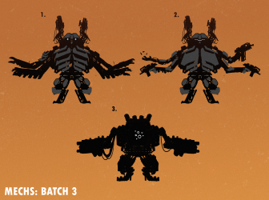
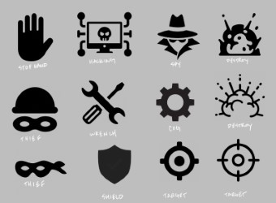
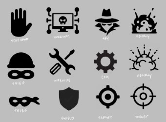

Welcome to Ready Mech GO! The year is 2150. All Olympic and other major league sports have been outdated. There is no bigger sport in the world than Ready Mech GO! Each sovereign nation can compete in the biannual games. The rules are simple. Do whatever it takes to win! Each Nation designs, builds, and submits their own mech to participate in a massive arena. Do you have what it takes to come out on top as Victor? The Mech with the most power at the end wins the game. Ready Mech Go is the first of many games designed, built, and published by Ice Cobra Games.
Theme
I have always wanted to see real Mechs fights since I was a kid. I saw them in various movies but I wanted to see a real sport. I decided it was a cool concept as well as one that could fit into a game well.
Art
Art was one of the hardest aspects of creating Ready Mech GO! I searched far and wide for an artist and everything was out of my budget. How was I supposed to start making a game without art? How was I going to get art without paying for it? I found an artist. I paid him for a small test and once he delivered, I decided he was the right guy for the job. It took almost a year to get all the art done for the game. This was not a fast process.
 

Mechanics
I was looking at other popular games that were doing well on Kickstarter and decided to do something similar, but I also found a lot of mechanics that needed to be changed. People get frustrated with games that are too luck based or the feeling that control is unobtainable. Therefore, I created 3 draw piles so that each player could choose what he or she wanted to achieve on their turn. This created the feeling of choosing your luck and the results in play testing were quite positive.
Playtesting
I thought that after a few games and revisions I would be in the clear with a smooth and clean-cut game. This was not the case. There were major reconstructions and changes. I had as many people as possible playtest the game. I had family play it because they were accessible for quantity in play testing. They could find the bugs. I found people who did not like playing boardgames. They added perspective on what would allow me to open my audience and make it more fun. They were so that everything could be questioned. I played with kids to see if they could handle the game that was fore everyone. I played with avid players so that I could get unique and fun mechanics in the game that add strategy and variance.